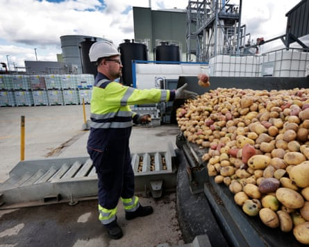
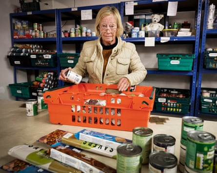
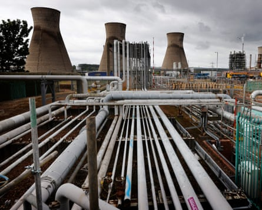

Every morning in Grangemouth, chemists at Celtic Renewables’s small factory feed a vial of microbes with a precisely tailored cocktail of food – liquid residues from the scotch whisky industry.
In vessels surrounded by a web of metal pipes and gleaming stainless steel valves, the microbes multiply into something other than drink: a starter solution for batches of acetone, butanol and ethanol – chemicals essential for countless everyday products.
Celtic Renewables wants more: a plant 10 times its current size. That could form part of plans to sustain Scotland’s chemicals industry after Grangemouth sustained a crushing blow: the closure of the 100-year-old refinery in April, with the loss of 400 jobs. The huge complex will be reduced to a fuel import terminal, staffed by only 75 people. As many as 4,600 jobs in the refinery’s supply chain could also be affected.
That closure has made Grangemouth one of the earliest tests of a “just transition”: the idea that the economy can move relatively painlessly from fossil fuels to net zero, helped along by judicious government interventions to spur new jobs in place of the old.
Celtic Renewables takes byproducts and waste from the food, drink and agriculture industries and turns them into green chemicals.Photograph: Murdo MacLeod/The Guardian
The Labour government fears that failure could mean voters turn their backs on it – and on the pledge to reach net zero carbon emissions by 2050 – throughout what remains of Scotland’s largely fossil fuel-dependent industry. Climate action by government remains popular in Britain , but parties on the right, and particularly Nigel Farage’s Reform UK, believe opposition to net zero can win them power.
As the government this week unveiled a new industrial strategy , this article – the second in a series on the battle for Britain’s deindustrialised areas – looks at the future for one of Scotland’s industrial icons.
After the second world war, deindustrialisation wiped out much of the coal mining, shipbuilding and steelmaking that dominated employment in Scotland’s central belt from Glasgow to Edinburgh. While those industries all but disappeared, Grangemouth held out, refining crude oil to feed Scotland’s cars and planes taking off from Edinburgh and Glasgow.
Grangemouth’s refinery traces its history back to 1924, making it the second oldest in Europe, but since 2005 it has been part of Jim Ratcliffe ’s Ineos chemicals empire. Ratcliffe’s investments bolted together assets that others did not want, and generated huge profits. Ineos agreed a deal in 2011 for Chinese state-owned PetroChina to partner in a joint venture, Petroineos.
Expensive energy
Petroineos executives argued in Scottish parliamentary hearings that Grangemouth was not able to compete with newer, more efficient plants in the Middle East and Africa. UK chemicals output has slumped 42% since peaking in March 2020, according to the Office for National Statistics.
Ratcliffe has faced significant criticism for cutting jobs in chemicals and at Manchester United Football Club – which he took control of last year. But he has claimed that it was UK energy policy, not his decisions, that made Grangemouth unviable. Chemicals companies report UK energy costs are five times higher than in the US and well over double those in the EU, according to the Chemical Industries Association, a lobby group. Ratcliffe is also a staunch opponent of carbon taxes on businesses.
“We are witnessing the extinction of one of our major industries as chemical manufacture has the life squeezed out of it,” Ratcliffe told the Financial Times in January. Deindustrialising Britain achieves “nothing for the environment,” he said. “It merely shifts production and emissions elsewhere.”
Cutting energy costs was the flagship measure of the government’s industrial strategy, with exemptions for chemicals businesses for the costs of renewable energy programmes and discounts for levies to fund the grid. The measures did not include short-term help on driving down wholesale prices, the key complaint of big energy users.
What do you do with a tangle of pipes, furnaces and crackers like the Grangemouth refinery? A Scottish government-funded study, known as Project Willow, described nine options for chemical industries that could happen on the site, including plastics recycling, making chemicals from wood, or – perhaps most ardently desired – making so-called sustainable aviation fuel (SAF). Westminster has set aside £200m to support private sector investments at Grangemouth, plus £25m from the Scottish government, to support projects. Senior government sources said more money could be available if the right projects come up.
Yet each of those options comes with a price tag, ranging from the relatively manageable (£15m for turning organic waste into methane, with up to 70 jobs) to the truly enormous (up to £2.1bn for a SAF plant, and 270 jobs).
The transition does not feel pain-free in Grangemouth town centre, with the refinery chimneys visible from the end of the road. A pleasant park, rows of sandstone homes and later semi-detached houses evidence the prosperity of the early 1900s and the boom times of the 60s and 70s, but the town also has several areas counted among the 10% most deprived in Scotland. Manufacturing in 2023 accounted for 11.1% of jobs in the broader Falkirk council area. That compared with 6.9% across Scotland that year – down from 35% in 1951 .
‘You don’t see anybody’
Mohammad Saleem, the shopkeeper at Sweet Talk, is already feeling the effects of the refinery closure, and has cut back opening hours, with fewer workers passing through to grab chocolate or a paper on the way to work.
“Quiet,” is his description of business in recent months. “It used to be good before corona. After corona, that’s it. This time, lunchtime, you would see crowds. Now you don’t see anybody.”
“It’s a disgrace,” said another shopkeeper in the centre. “But what can you do?”
Marilyn McIlvaney, the secretary of the Kersiebank Community Project, a volunteer-run charity shop that runs a food bank, said they had seen more people under pressure in the weeks since the closure of the refinery. Redundant workers got a relatively generous 18 months of pay, but they are still tightening belts.
Marilyn McIlvaney, of the Kersiebank Community Project, said more people had been under pressure since the closure of the refinery.Photograph: Murdo MacLeod/The Guardian
“They’re cutting back,” she said. “It’s having a knock-on to the other businesses. It’s getting worse. Food banks are queueing out the doors – some of them [users] are working.”
The question now for workers is whether Project Willow jobs come through before they have to look elsewhere. Those hopes are looking increasingly forlorn, according to Cliff Bowen, who has worked at Grangemouth for 33 years, and is now a convener for Unite, a union. He argues that the political implications will be huge.
“All we asked for is another couple of years until these technologies come online,” Bowen said. “It breaks my heart. Labour are done for a generation in this area.”
Bowen, a lifelong Labour supporter whose anger is palpable, believes that Reform UK will benefit from the loss of jobs at Grangemouth, and throughout Scotland’s oil and gas economy, because it appears to offer a chance for those businesses to continue to operate.
“They’re talking sense when it comes to energy supply,” said Bowen. “People are going to vote for that, regardless of the colour on their rosette.”
Reform’s support is notably strong in areas around other refineries: near Stanlow refinery it won the Runcorn Westminster byelection, while Reform is leading Westminster polls in each of the constituencies that host the UK’s other refineries at Fawley in Hampshire, Pembroke in west Wales, and the plants at Humber and Lindsey in Lincolnshire. Richard Tice, the Reform deputy leader, said: “Reform will scrap net zero which will enable lower energy costs and investment in the chemicals and refining industries, thus creating jobs and leading to the reopening of Grangemouth.”
The Scottish government is looking at options for the future of the Grangemouth oil refinery site.Photograph: Murdo MacLeod/The Guardian
That prescription is not seen as realistic by industry experts, even if big subsidies were offered. It would also lead to continued UK carbon emissions: the refinery was responsible for more than a quarter of all Scotland’s carbon . Yet the pledge may resonate with people struggling to find work.
Labour managed a surprise victory in a Scottish parliamentary byelection earlier this month in Hamilton – leaving the Scottish National party (SNP) in second and Reform a close third. Yet Brian Leishman, who won Grangemouth back for Labour only last year in the Westminster general election, said the closure was a “failure from the political class” – including Labour, after it failed to live up to a pre-election pledge by the Scottish Labour leader, Anas Sarwar , to “step in to save the jobs at the refinery”. The SNP is keen to win back an area it held for nearly a decade at Westminster, but also has limited room for manoeuvre because of its nearly two decades leading the Scottish government.
Leishman argued that the government should take ownership stakes in return for Project Willow funding, to prevent the area being vulnerable to the whims of distant bosses in the future. He said that Labour needed to invest in Scotland if it wanted to hold on to its previous gains.
“If you give people good jobs, good life chances, that’s now you get a second term,” he said. “If you do the basics of government well and you improve people’s living standards, you’ll beat Reform.”
Looking for answers
Scottish Enterprise, the lead agency on Project Willow, is hopeful that some of the interest will translate into action soon.
Jane Martin, the managing director for innovation and investment, said she was “aware of the need for short-term wins to turn the narrative around”. The agency is working to triage projects, and work out which will be most likely to succeed. They are a mix of “inside the fence” at the refinery, and others outside.
“Project Willow is a really important lever but we are not only focused on those technologies,” Martin said. “We’re not shutting anything down at this stage.”
It does appear increasingly unlikely that a single employer will emerge to replace the refinery’s jobs. One much vaunted possibility was an investment to produce SAF to meet the UK’s mandate of 10% of all aviation fuel by 2030.
However, Michael Liebreich, a clean energy expert, said SAF was still seen as too risky for investors . SAF production (either from biological sources or using green hydrogen) is still several times more expensive than refining oil into kerosene, and nobody has dared to make the huge investment needed without a cast-iron guarantee that the product will be bought.

The Scotland first minister, John Swinney, with Mark Simmers, the chief executive of Celtic Renewables, on a visit to its plant in Grangemouth.Photograph: WPA/Getty Images
There does not appear to be much hope for a neat solution. The question now appears to be whether smaller projects can let the town retain a chemical industry. That could allow it to salvage something from the devastation of the refinery’s closure – and prove whether a messy transition can also be just.
“We’ve got a redundant petrochemical facility that has land, utilities and access to great people, if we can be courageous,” said Mark Simmers, the chief executive of Celtic Renewables. “And it does require bravery and courage, particularly for governments to say, ‘We’re going to create these low-carbon manufacturing jobs, and repurpose all that land and utilities and people to do something which is all about the future’.
“That then becomes an example for the world. So I really believe if people are brave and courageous and say ‘let’s do this’, it will provide a blueprint for lots refineries in the UK and the world.”